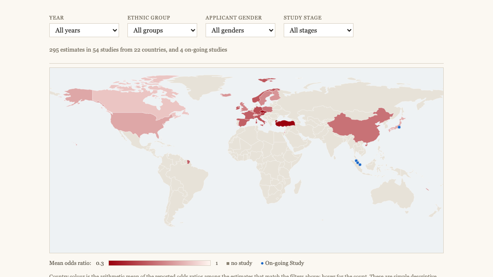
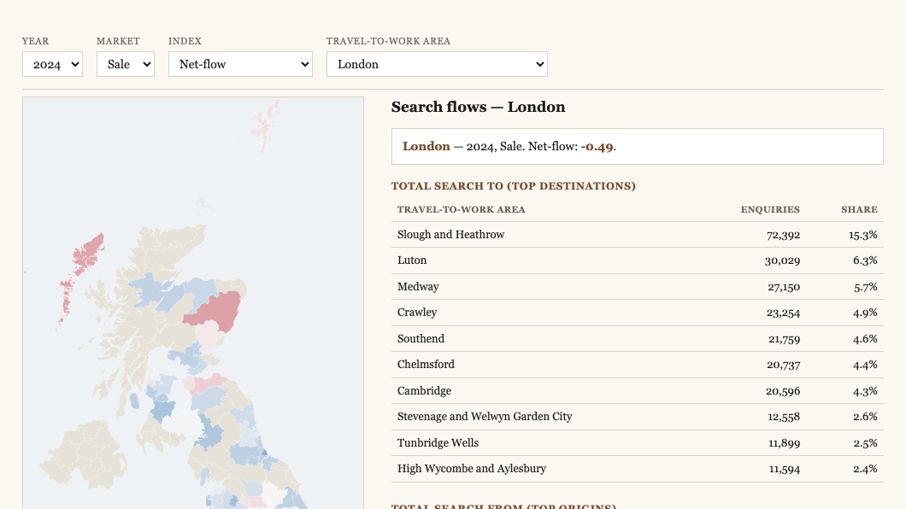
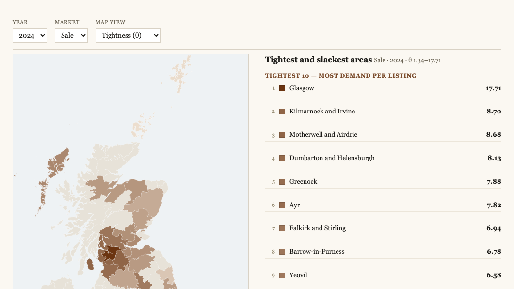

Interactive maps from across my research. Each one turns a large spatial dataset into something explorable: choose the year, place, and measure, and read the pattern directly rather than only in a table. The collection grows as projects mature.

The New Geography of Housing Discrimination Field-experiment odds ratios of minority disadvantage in housing search, across 54 correspondence-test studies in 22 countries.
The Geography of Housing Demand in Britain A family of revealed-demand indices for every travel-to-work area, built from about 294 million property-search enquiries.
The Spatial Inequality of Housing-Market Tightness in Britain Where search demand outruns listed supply: tightness by travel-to-work area, its dispersion, and its spatial clustering. The Aviation Carbon-Emission Network of the Yangtze River Delta
Intercity aviation carbon emissions across China from Yangtze River Delta flights (2019–2023): hub concentration, trunk routes, and network communities before, during, and after COVID-19.
The Aviation Carbon-Emission Network of the Yangtze River Delta
Intercity aviation carbon emissions across China from Yangtze River Delta flights (2019–2023): hub concentration, trunk routes, and network communities before, during, and after COVID-19.
 Frontier Archetypes of Central America's Tropical Moist Forests
Where and how tropical moist forest is lost across Central America (1990–2023): frontier archetypes on a 1.5-km grid, the typologies behind them, and the covariates that drive each frontier state.
Frontier Archetypes of Central America's Tropical Moist Forests
Where and how tropical moist forest is lost across Central America (1990–2023): frontier archetypes on a 1.5-km grid, the typologies behind them, and the covariates that drive each frontier state.
 The ESG Facade: Disclosure and Lip Service among Chinese Listed Firms
Geographic and industry patterns of ESG disclosure and lip service (extensive disclosure, weak performance) among Chinese listed firms, explorable by year, province, and ESG dimension.
The ESG Facade: Disclosure and Lip Service among Chinese Listed Firms
Geographic and industry patterns of ESG disclosure and lip service (extensive disclosure, weak performance) among Chinese listed firms, explorable by year, province, and ESG dimension.
 Housing Demand by Town Type and Growth Trajectory
Search-flow indices for every travel-to-work area, grouped by economic function and population trajectory, as aligned heatmaps across the three pandemic periods and both tenures, with a levels and a step-change view.
Housing Demand by Town Type and Growth Trajectory
Search-flow indices for every travel-to-work area, grouped by economic function and population trajectory, as aligned heatmaps across the three pandemic periods and both tenures, with a levels and a step-change view.
 The Two Margins of Housing Search
Bars for how far searchers look (km) and lines for how many cross the city edge (%), sale in blue and rent in purple, for the nation or any chosen travel-to-work area: more crossed after 2020 but did not look farther.
The Two Margins of Housing Search
Bars for how far searchers look (km) and lines for how many cross the city edge (%), sale in blue and rent in purple, for the nation or any chosen travel-to-work area: more crossed after 2020 but did not look farther.